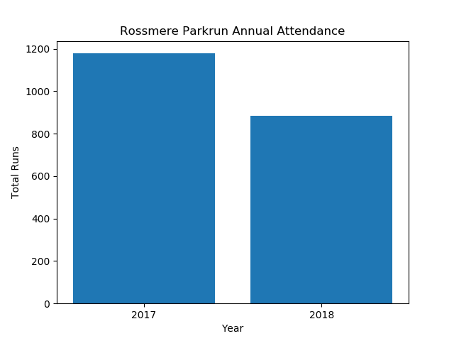
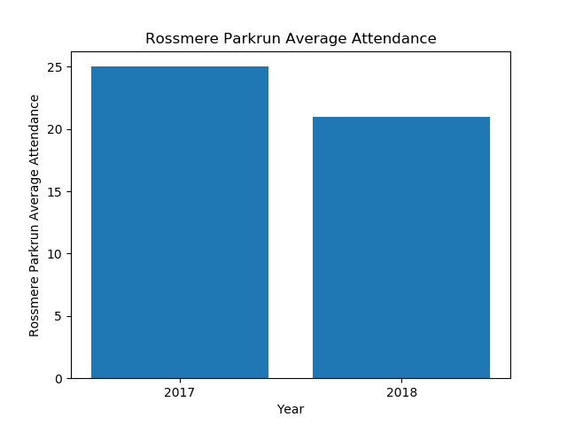
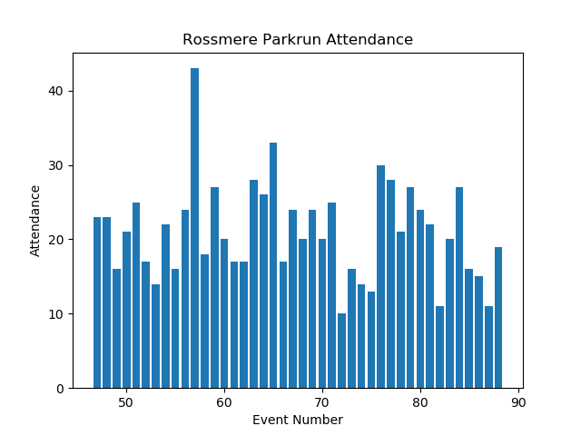
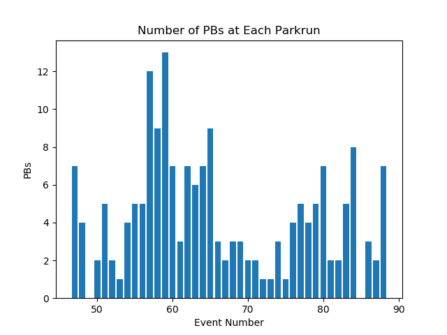
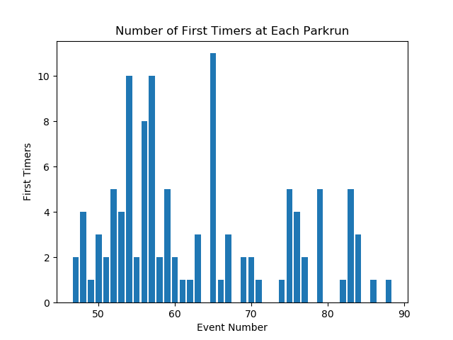

Annual Summary for Rossmere Parkrun
Annual Attendance
| Year | Number of Events | Average Attendance | Number of Runs | Number of Volunteers | Number of PBs | Number of First Timers |
|---|
| 2017 | 46 | 25 | 1178 | 835 | 217 | 233 |
| 2018 | 42 | 21 | 884 | 668 | 183 | 113 |


Statistics for Events between 01/01/2018 and 31/12/2018
Max Attendance = 43, Min Attendance = 10



Top Participants
Top Volunteers
Total number of volunteering events
| Name | Number of Runs | Number of Volunteers |
|---|
| 1 | Audrey STREETING | 0 | 39 |
| 2 | Michael STREETING | 0 | 36 |
| 3 | Heidi MORRISON | 0 | 33 |
| 4 | Carl MARCHANT | 0 | 30 |
| 5 | Steven MORRISON | 0 | 30 |
| 6 | Yvonne TINDALE | 0 | 29 |
| 7 | Alison EATON | 0 | 23 |
| 8 | Cheryl LAYCOCK | 0 | 23 |
| 9 | Dawn PISCHOS | 0 | 23 |
| 10 | Gill RUSSELL | 0 | 23 |
| 11 | Bryan LANGSTON | 0 | 22 |
Most Runs
Total Number of Runs in the period
| Name | Number of Runs | Number of Volunteers |
|---|
| 1 | Jenson WILLIAMS | 31 | 0 |
| 2 | Macie SMITH | 29 | 0 |
| 3 | Matthew PISCHOS | 28 | 0 |
| 4 | Sophie PISCHOS | 27 | 0 |
| 5 | Alexander ORGAN | 24 | 0 |
| 6 | Hope PARKER | 20 | 0 |
| 7 | Joe DAVIES | 20 | 0 |
| 8 | Emilie- Jaye NOBLE | 19 | 0 |
| 9 | William RACKSTRAW | 18 | 0 |
| 10 | Athol PARKER | 17 | 0 |
Time on Feet
Total time spent running in the period.
| Name | Time on Feet (hours) |
|---|
| 1 | Sophie PISCHOS | 7.4 |
| 2 | Macie SMITH | 6.3 |
| 3 | Matthew PISCHOS | 5.7 |
| 4 | Jenson WILLIAMS | 5.5 |
| 5 | Alexander ORGAN | 4.5 |
| 6 | Joe DAVIES | 4.0 |
| 7 | Hope PARKER | 4.0 |
| 8 | Isla URWIN | 3.9 |
| 9 | William RACKSTRAW | 3.7 |
| 10 | Athol PARKER | 3.7 |
Keenest
Total Participation (run + volunteer). Note: Running and volunteering on the same day counts.
| Name | Number of Runs | Number of Volunteers | Total |
|---|
| 1 | Audrey STREETING | 0 | 39 | 39 |
| 2 | Michael STREETING | 0 | 36 | 36 |
| 3 | Heidi MORRISON | 0 | 33 | 33 |
| 4 | Jenson WILLIAMS | 31 | 0 | 31 |
| 5 | Carl MARCHANT | 0 | 30 | 30 |
| 6 | Steven MORRISON | 0 | 30 | 30 |
| 7 | Macie SMITH | 29 | 0 | 29 |
| 8 | Yvonne TINDALE | 0 | 29 | 29 |
| 9 | Matthew PISCHOS | 28 | 0 | 28 |
| 10 | Sophie PISCHOS | 27 | 0 | 27 |
Consistency
Smallest variation (standard deviation) in run times.
| Name | Run Time SD (sec) | Number of Runs |
|---|
| 1 | Alex LAKE | 15.6 | 11 |
| 2 | Emilie- Jaye NOBLE | 15.7 | 19 |
| 3 | Zac BEDDING | 15.9 | 11 |
| 4 | Isaac ORGAN | 16.6 | 11 |
| 5 | Ethan JEFFRIES | 19.8 | 13 |
| 6 | Alexander ORGAN | 21.9 | 24 |
| 7 | Macie SMITH | 23.1 | 28 |
| 8 | Jenson WILLIAMS | 31.8 | 29 |
| 9 | Isobelle DAVIES | 34.9 | 10 |
| 10 | Isabelle CARLILE | 36.5 | 16 |